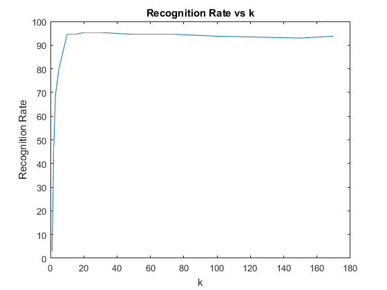
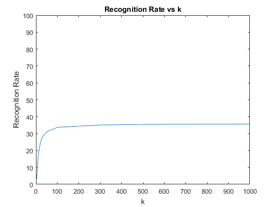
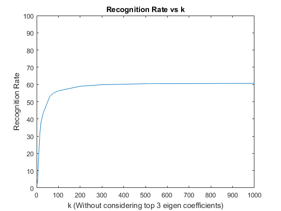

Contents
ORL Dataset
X = zeros(92*112,192);
for i = 1:32
for j = 1:6
X(:,6*(i-1)+j) = reshape(im2double((imread(strcat('../Data/Dataset/s',num2str(i),'/',num2str(j),'.pgm')))),[92*112,1]);
end
end
mean_face = (sum(X,2)/192);
Xbar = X - mean_face;
L = Xbar'*Xbar;
[V,D] = eig(L);
[d,ind] = sort(diag(D),'descend');
D = D(ind,ind);
V = V(:,ind);
V= X*V;
V_2 = V.*V;
V_data=V./sqrt(sum(V_2));
k_vec = [1, 2, 3, 5, 10, 15, 20, 30, 50, 75, 100, 150, 170];
rate_rec = zeros(size(k_vec));
for z = 1:13
Vk=V_data(:,1:k_vec(1,z));
coeff = Vk'*Xbar;
rate= 0;
for i = 1:32
for j = 7:10
z_i = reshape(im2double((imread(strcat('../Data/Dataset/s',num2str(i),'/',num2str(j),'.pgm')))),[92*112,1]);
z_bar = z_i - mean_face;
coeff_z = Vk'*z_bar;
error_image = coeff - coeff_z;
error_image = error_image.*error_image;
error_sum = sum(error_image);
[M,I] = min(error_sum);
if(i == floor((I-1)/6)+1)
rate=rate+1;
end
end
end
rate_rec(1,z) = rate/128*100;
disp(['No. of Images correctly identified for k = ',num2str(k_vec(1,z)), ' is: ' ,num2str(rate)]);
end
figure;
plot(k_vec,rate_rec);
title('Recognition Rate vs k');
xlabel('k');
ylabel('Recognition Rate');
axis on
No. of Images correctly identified for k = 1 is: 4
No. of Images correctly identified for k = 2 is: 60
No. of Images correctly identified for k = 3 is: 88
No. of Images correctly identified for k = 5 is: 102
No. of Images correctly identified for k = 10 is: 121
No. of Images correctly identified for k = 15 is: 121
No. of Images correctly identified for k = 20 is: 122
No. of Images correctly identified for k = 30 is: 122
No. of Images correctly identified for k = 50 is: 121
No. of Images correctly identified for k = 75 is: 121
No. of Images correctly identified for k = 100 is: 120
No. of Images correctly identified for k = 150 is: 119
No. of Images correctly identified for k = 170 is: 120

Yale Dataset
X_yale = zeros(192*168,1520);
yaleF_person = dir([ '../Data/Dataset/yaleB*']);
for i = 1:38
yaleFiles = dir(['../Data/Dataset/' yaleF_person(i).name '/*.pgm']);
for j = 1:40
imgPath = strcat(['../Data/Dataset/' yaleF_person(i).name '/' yaleFiles(j).name]);
X_yale(:,40*(i-1)+j) = reshape(im2double((imread(imgPath))),[192*168,1]);
end
end
mean_face_yale = (sum(X_yale,2)/1520);
Xbar_yale = X_yale - mean_face_yale;
[U,S,V] = svds(Xbar_yale,1000);
[d,ind] = sort(diag(S),'descend');
S = S(ind,ind);
S= sqrt(S);
U = U(:,ind);
U_2 = U.*U;
U_data=U./sqrt(sum(U_2));
k_vec1=[1, 2, 3, 5, 10, 15, 20, 30, 50, 60, 65, 75, 100, 200, 300, 500, 1000];
rate_rec = zeros(size(k_vec1));
rate_rec1 = zeros(size(k_vec1));
for z = 1:17
Vk=U_data(:,1:k_vec1(1,z));
coeff = Vk'*Xbar_yale;
rate= 0;
rate1=0;
length=0;
for i = 1:38
yaleFiles = dir(['../Data/Dataset/' yaleF_person(i).name '/*.pgm']);
for j = 41:size(yaleFiles,1)
imgPath = strcat(['../Data/Dataset/' yaleF_person(i).name '/' yaleFiles(j).name]);
z_i = reshape(im2double((imread(imgPath))),[192*168,1]);
z_bar = z_i - mean_face_yale;
coeff_z = Vk'*z_bar;
error_image = coeff - coeff_z;
error_image = error_image.*error_image;
error_sum = sum(error_image);
[M,I] = min(error_sum);
error_sum1 = sum(error_image(4:k_vec1(1,z),:));
[M,I1] = min(error_sum1);
if(i == floor((I-1)/40)+1)
rate=rate+1;
end
if(i == floor((I1-1)/40)+1)
rate1=rate1+1;
end
length=length+1;
end
end
rate_rec(1,z) = rate/length*100;
rate_rec1(1,z) = rate1/length*100;
disp(['No. of Images correctly identified for k = ',num2str(k_vec1(1,z)) ,' is: ', num2str(rate)]);
disp(['No. of Images correctly identified for k (without top 3 eigen coefficients) = ',num2str(k_vec1(1,z)), ' is: ' ,num2str(rate1)]);
end
figure;
plot(k_vec1,rate_rec);
title('Recognition Rate vs k');
xlabel('k');
ylabel('Recognition Rate');
axis on
axis([0 1000 0 100]);
figure;
plot(k_vec1,rate_rec1);
title('Recognition Rate vs k');
xlabel('k (Without considering top 3 eigen coefficients)');
ylabel('Recognition Rate');
axis on
axis([0 1000 0 100]);
No. of Images correctly identified for k = 1 is: 24
No. of Images correctly identified for k (without top 3 eigen coefficients) = 1 is: 24
No. of Images correctly identified for k = 2 is: 29
No. of Images correctly identified for k (without top 3 eigen coefficients) = 2 is: 24
No. of Images correctly identified for k = 3 is: 28
No. of Images correctly identified for k (without top 3 eigen coefficients) = 3 is: 24
No. of Images correctly identified for k = 5 is: 60
No. of Images correctly identified for k (without top 3 eigen coefficients) = 5 is: 48
No. of Images correctly identified for k = 10 is: 150
No. of Images correctly identified for k (without top 3 eigen coefficients) = 10 is: 181
No. of Images correctly identified for k = 15 is: 186
No. of Images correctly identified for k (without top 3 eigen coefficients) = 15 is: 285
No. of Images correctly identified for k = 20 is: 217
No. of Images correctly identified for k (without top 3 eigen coefficients) = 20 is: 341
No. of Images correctly identified for k = 30 is: 251
No. of Images correctly identified for k (without top 3 eigen coefficients) = 30 is: 388
No. of Images correctly identified for k = 50 is: 276
No. of Images correctly identified for k (without top 3 eigen coefficients) = 50 is: 445
No. of Images correctly identified for k = 60 is: 284
No. of Images correctly identified for k (without top 3 eigen coefficients) = 60 is: 474
No. of Images correctly identified for k = 65 is: 287
No. of Images correctly identified for k (without top 3 eigen coefficients) = 65 is: 480
No. of Images correctly identified for k = 75 is: 289
No. of Images correctly identified for k (without top 3 eigen coefficients) = 75 is: 491
No. of Images correctly identified for k = 100 is: 302
No. of Images correctly identified for k (without top 3 eigen coefficients) = 100 is: 504
No. of Images correctly identified for k = 200 is: 308
No. of Images correctly identified for k (without top 3 eigen coefficients) = 200 is: 528
No. of Images correctly identified for k = 300 is: 314
No. of Images correctly identified for k (without top 3 eigen coefficients) = 300 is: 536
No. of Images correctly identified for k = 500 is: 318
No. of Images correctly identified for k (without top 3 eigen coefficients) = 500 is: 541
No. of Images correctly identified for k = 1000 is: 319
No. of Images correctly identified for k (without top 3 eigen coefficients) = 1000 is: 543
 